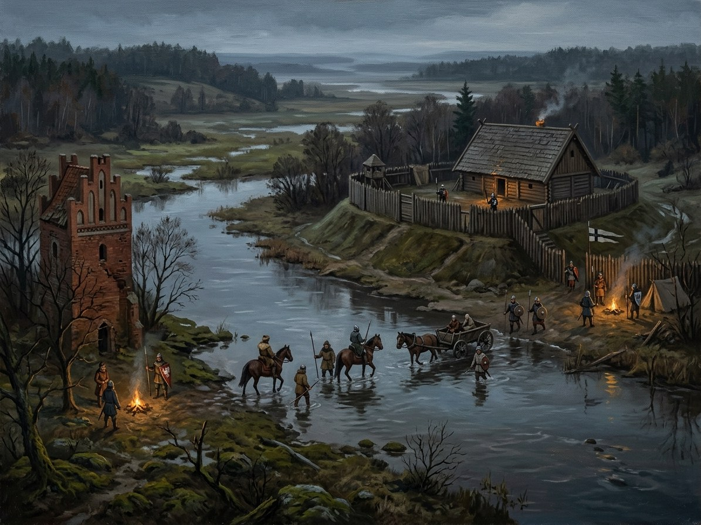

Noteć ford (Neumark / Greater Poland border)¶
In the 1380s [Historical record]¶
The Noteć (Ger. Netze) formed the frontier between the Neumark and Greater Poland. The Neumark had belonged to the Order since 1402. In August 1430 Sigismund of Luxembourg sent two courtiers ahead, the jurist Baptista Cigala and the Silesian Sigismund Roth (they left Vienna on 4 July) with letters and goods for the intended coronation of Vytautas; they were robbed and beaten before 19 August on the Neumark-Greater Poland border by the royal guards under Jan Czarnkowski, who took their letters, horses and about 1,000 ducats‘ worth of valuables. The embassy waited at Frankfurt (Oder) and turned back. The crown itself was never seized: the Order’s komtur of Schlochau wrote on 19 August that the crown had not been taken, because the courtiers never had it. The seizure is a later legend. Sources: Bar 2017 and Szybkowski 2010; en.wikipedia.
Noteć ford (Neumark / Greater Poland border)

Noteć ford (Neumark / Greater Poland border) · place¶
Tipas |
vietovė |
Pastaba |
The Noteć ford used for the invented leaf-crown encounter in Book IV; not an established site where the historical crown was seized. |
Sensory sketch¶
A low river on a sandy frontier: reeds and willow, brown water running shallow in late August, flat fields stripped by harvest, pine woods on the sand. Merchants‘ carts line up because the ford is free while the bridge below charges toll. Dry heat, dust, wasps, cart-grease and horse sweat; at the water’s edge, the silence of men waiting for a ruler who is not coming.
Sagoje¶
The false-crown scene. A chest is opened and dry leaves tumble out; the Hungarian goldsmith’s apprentice Pál swears he held real gold. In the saga Henė’s bargain had turned the crown to leaves, and Vytautas refuses it: „I never offered a lie; it was my most honest bargain, and I lost it.“ The record gives only a robbery; the saga gives it a meaning.
Getting there¶
Frankfurt (Oder) is some 80-120 km west (three to four days for couriers). Poznań, the Greater Poland capital, about 80 km east. From Vienna the road runs through Silesia and the Neumark: about 500 km straight, c. 700 km by road. To Vilnius it is about 650 km straight; two to three weeks by road, eight to ten days with relays.
Scenes set here¶
Book IV ch. 20 Lenkų baimė (the route planned: Silesia, the Neumark, the Noteć), ch. 21 Karūnos kelionė (the road to the border, 15 Aug 1430), ch. 23 Lapai pakelėje (the Noteć ford, late August 1430).
Ryšiai
Events here: Crown embassy blocked at the Polish border (Aug 1430); Vytautas refuses Henė — Record: Sigismund’s couriers Cigala and Roth robbed on the Neumark / Greater Poland border by Jan Czarnkowski’s guards (before 19 Aug 1430); the embassy waited at Frankfurt (Oder) and turned back. The crown itself was never seized.
Chronologija¶
Year |
Event |
Book |
|---|---|---|
1430 |
Crown embassy blocked at the Polish border (Aug 1430); Vytautas refuses Henė |
IV · Nematoma Karūna |
Sąsajos¶
graph LR
ev_crown_intercepted["Crown embassy blocked at the Polish border (Aug 1430); Vytautas refuses Henė"]
notec_ford["Noteć ford (Neumark / Greater Poland border)"]
ev_crown_intercepted -->|Location| notec_ford
style notec_ford stroke-width:3px